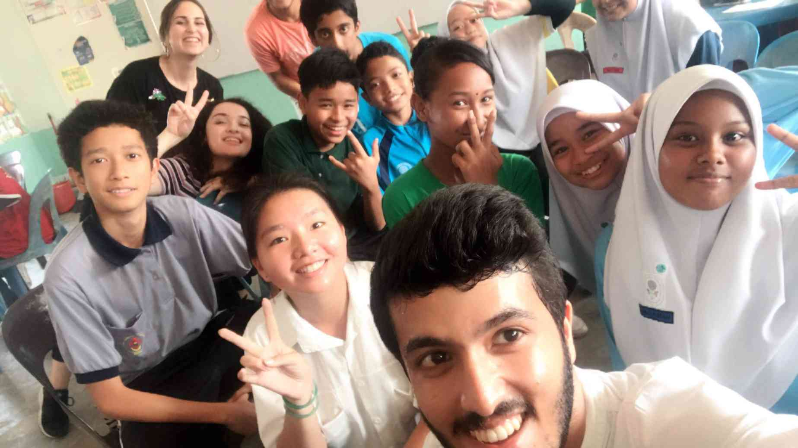

Volunteer
-

AIESEC in Malaysia
Teach with AIESEC Develop your leadership while boosting your career prospects with an opportunity to work as a teacher abroad.
-
Giving Food for Patients
Bringing in food from home to a hospital patient can be a nice idea and a great way to show you care about a loved one. Whether it is a culturally specific food or a favourite family meal, bringing in food can help a patient feel more at home and assist with meeting their meal preferences.
-
Giving scholarships for children
Providing scholarships to the students will enable them to concentrate on their studies rather than worrying regarding their finances. Hence, the risk of dropping-out falls. By removing financial barriers, scholarships help the students to fulfill their performances improve and score better grades.